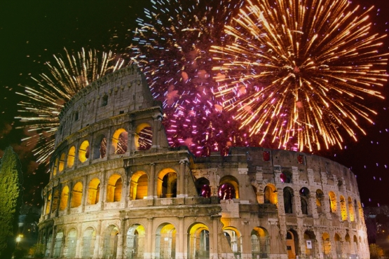
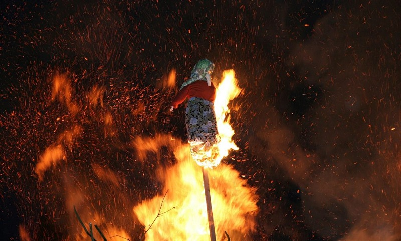
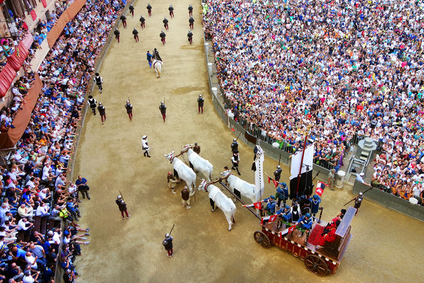
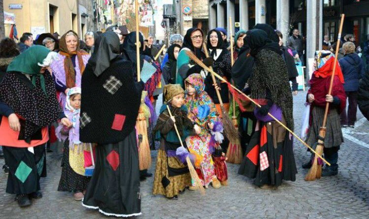

| Inicio |
Tradiciones |
Historia |
Significado de la bandera |
Comidas típicas |
Lugares para visitar |
TRADICIONES DE ITALIA |
El Capodanno: Es nuestro fin de año. Es toda una celebración donde los italianos se lanzan a las calles a disfrutar de conciertos vivo, obras de teatro y fuegos artificiales.En esta fiesta, familia y amigos se reúnen para comer en abundancia y salen a recibir el año nuevo unos minutos antes de las 12 a sus balcones.
|
La Giubiana: En Italia representa al año viejo, es una bruja vestida de trapos que se quema en las principales plazas de los pueblos. Es una celebración tradicional del norte de Italia, entre Lombardía y Piamonte.Se lleva a cabo el último jueves de enero y viene a significar el paso de un año a otro. Es también un día para hacer buenos propósitos y mirar el año con positividad.
|
|  |
 |
Palio di Siena: Celebraciones de la Asunción y se celebraba el 15 de agosto al final de la ceremonia durante la cual las ciudades, El Palio era el momento culminante de las tierras y castillos sometidos a la República de Siena ofrecían velas a la Virgen.
|
La Befana: Es el nombre que recibe popularmente el día de la Epifanía, el 6 de enero, cuando los niños reciben regalos en memoria de los ofrecidos al Niño Jesús por los Reyes Magos. Y, como hemos visto, la befana es también el personaje encargado de repartir los obsequios entre los niños italianos. |
|  |
 |
Todos los derechos reservados 2025 |